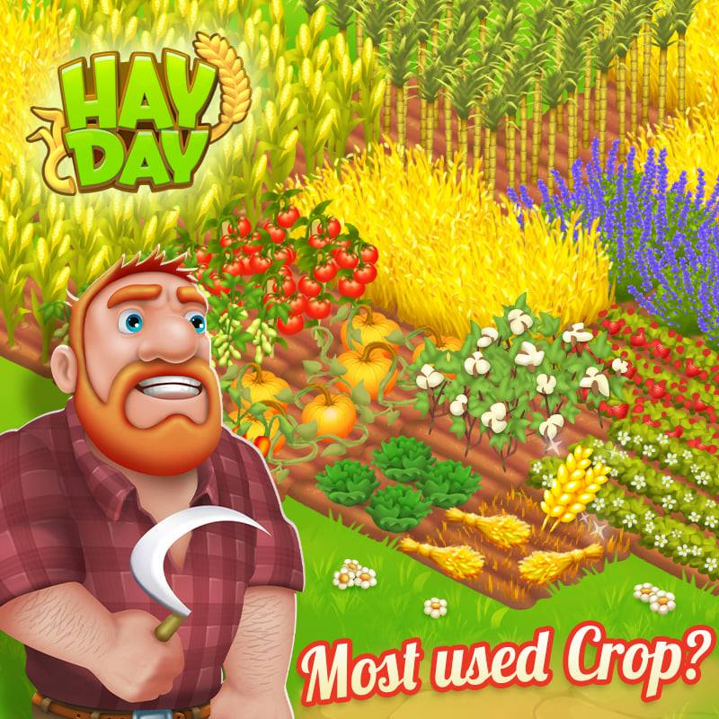
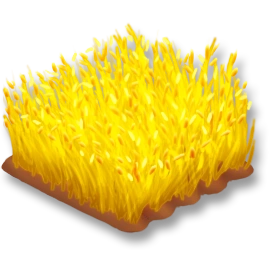
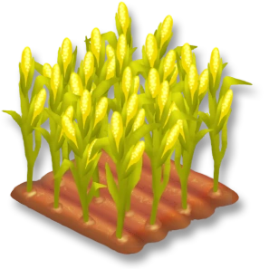
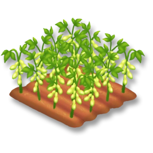
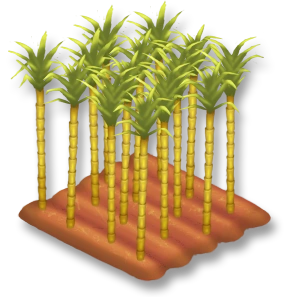
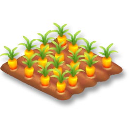

In Hay Day crops are your lifeline. Crops are how you gain gold, whether it be through completing item orders on the bulletin board or selling to the farm visitors. There are two different types of crops, ones that grow on trees and bushes - for example: apples and raspberries, and ones that grow on patches of dirt - for example: wheat and carrots. My favorite crop is wheat because of how versatile it is. Not only does the crop take the quickest time to grow (2 minutes), it can be used for a variety of recipes including breads and cookies. I love cookies! My favorite tree/bush crop is the raspberry because it's shade of magenta pink is one of my favorite colors. My least favorite crop is soybeans because of how common they are in quests but how long they take to grow.
This table lists the most common crops I've encountered throughout my time of playing the game. For the full list of crops click here.
| crop | level | grow time | image | animal feed used for |
|---|---|---|---|---|
| wheat | 1 | 2 min |  | chicken and sheep |
| corn | 2 | 5 min |  | chicken and cow |
| soybean | 5 | 20 min |  | cow, pigm and sheep |
| sugarcane | 7 | 30 min |  | none |
| carrot | 9 | 10 min |  | pig and goat |